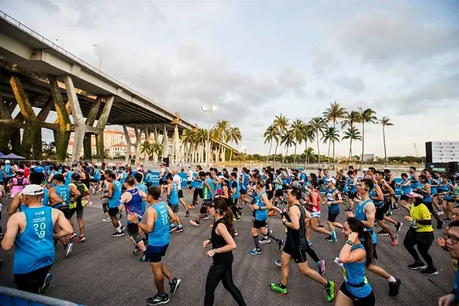

Pacing strategy is an important determinant of performance, especially in endurance events such as the marathon. Does pacing profile differ across runners of different levels? This blog post examines the pace variation of Singaporean male and female runners in the Standard Chartered Singapore Marathon (SCSM) 2019.

Art of Pacing
Pacing strategy in long-distance running refers to the distribution of running speed across the whole duration of event. Finding an optimised pacing strategy in a marathon event is no easy feat, as the distance often poses many uncertainties and unexpected challenges. Too conservative start may lead to a sub-optimal finish, while an aggressive start may result in early fatigue and excessive slowing down during latter stages of the race.
Generally, there are three types of pacing profiles: 1) negative, 2) positive, and 3) even pacing strategy. First, negative pacing refers to an increase in speed over the duration of event. This will mean running the second half of the race faster than the first half. Second, positive pacing is characterised by a decline in speed instead. Third, even pacing represents keeping relatively the same speed throughout the event. Such even pacing was observed in Eliud Kipchoge’s shattering of the 2 hour marathon barrier last year. If you look at his time splits, he and his pacing team ran each 5km within a range of 14:10 - 14:14. This suggests that adopting an even pacing profile in the marathon may be the most ideal strategy to hit your race goals.
Realistically, this is a tall order and gets increasingly harder to achieve as the race distance increases. Very often, we see drastic changes in running speed during endurance events. For example, we see more race participants walking in the second half of the marathon as compared to the first half. This is an expected phenomenon since fatigue kicks in as the race progresses. However, is such variation in pace similar across all levels of runners?
With the aim to answer this question, I scraped the time splits of all Singaporean runners who finished the full marathon in last year’s SCSM. The web scraping was performed using the pandas and BeautifulSoup package in python. You may find the full web scraping code here.
Based on the official results from the race website, a total of 3929 Singaporean men and 911 women completed the full marathon. Clearly, the marathon is not as popular among females than their male counterparts. Data on each 5km time split was retrieved for each runner. However, several runners were found with missing data for certain distances. Hence, for runners with missing time splits, it was assumed that their pace remained the same as the last recorded time split. Runners with missing data for the first 5km and 10km were considered invalid and removed from the dataset. Thus, I ended up with a total of 3886 men and 902 women for the analysis.
The coefficient of variation (CV) was used to measure the variation in each runner’s pace throughout the race. This was simply computed by dividing the standard deviation of all time splits by the mean speed. Higher CVs represent greater variation in pace and lower CVs indicate more consistency in running speed throughout the race. The CV was compared among three groups of runners in both gender groups: fast, mid-pack and slow. The fast group represents the top 20%, the mid-pack represents the middle 20%, and the slow group represents the bottom 20%. The notched box plots above illustrate the average running speed distribution of each group separated by genders. Evidently, the speeds differed significantly across groups for both genders.
The graph above presents the average CV scores in percentages of respective groups for both genders. We can see a trend that pace variation increases with slower marathon running times. Using a statistical test (one-way ANOVA) informed us that the differences in pace variation across groups were significant. The top 20% Singaporean male runners had an average of 12.11% in their marathon pace variation, and this was significantly less than the mid-pack (14.93%) and the slow group (15.59%). However, the mid-pack and slow groups showed comparably similar variation in pace. Similarly, for the females, the fast group (8.14%) showed significantly less variation in their pace than their slower counterparts. The mid-pack group (12.8%) also differed significantly as compared to the slow group (15.32%).
Importance of consistency in pacing
These numbers highlighted that better performing runners were not only faster in their speed, they also exhibited considerably less variation in their marathon running pace. Obviously, many factors can influence a marathon performance. One aspect is definitely optimising your pacing strategy during the race. This means selecting a pace that you can sustain consistently with minimal variation throughout the race. This is an important takeaway for all levels of runners. Hence, do practise your pacing strategy during training, and carefully plan your pace for race day. It will probably make a difference!
Data processing, analysis and visualisation were performed on R. Full code and datasets can be found here.